Cuando una ventana o puerta corrediza se traba, hace ruido o cuesta moverla, casi siempre es la rueda. En Alumol tenemos ruedas y carritos para los sistemas de aluminio más usados: simples y dobles, de nylon y metálicas, y con rulimán para hojas pesadas.
Algunos de nuestros productos
 Rueda doble plásticaVer en el catálogo →
Rueda doble plásticaVer en el catálogo →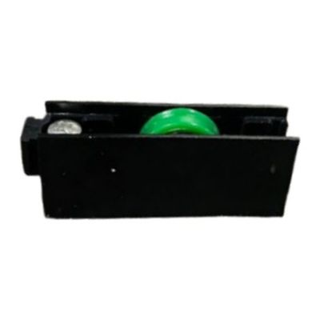
Rueda EurolightVer en el catálogo →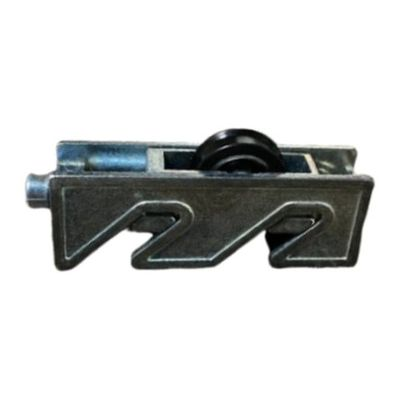
Rueda Eurolight con cajetín metálicoVer en el catálogo →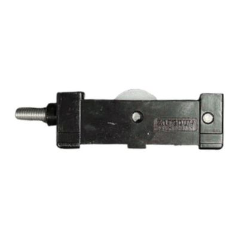
Rueda europea simpleVer en el catálogo →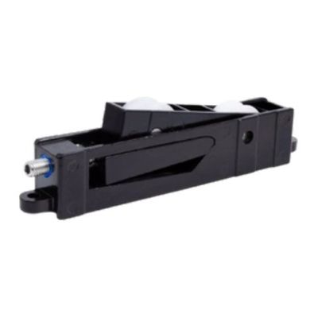
Rueda europea doble AndaluzVer en el catálogo →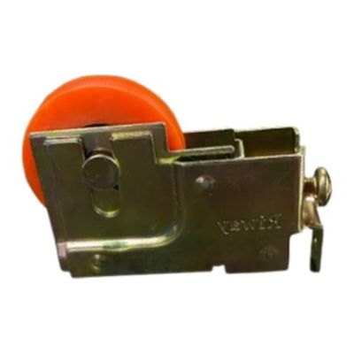
Rueda nylon colombianaVer en el catálogo →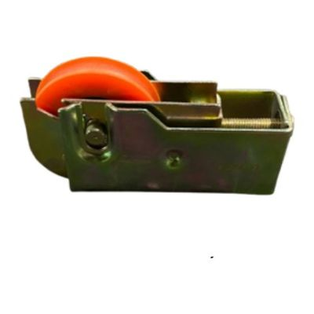
Rueda nylon americanaVer en el catálogo →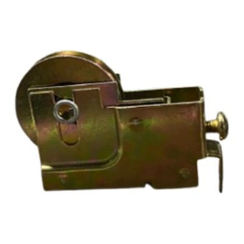
Rueda colombiana aceroVer en el catálogo →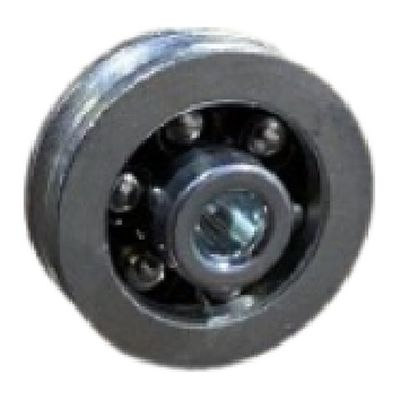
Rueda VC pesada rulimanVer en el catálogo →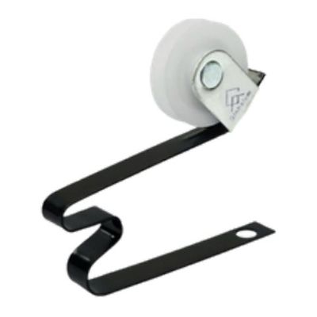
Rueda puerta mallaVer en el catálogo →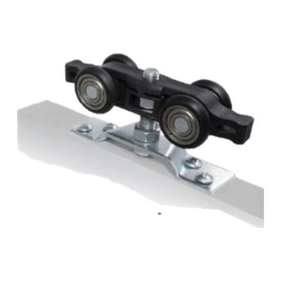
Carrito sin frenoVer en el catálogo →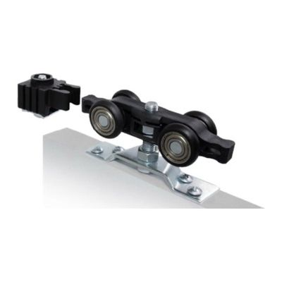
Carrito con frenoVer en el catálogo →Ver toda la sección «Ruedas y carritos» en el catálogo
Por qué comprar en Alumol
- Desde 1982Más de 40 años distribuyendo en Guayaquil.
- Mejores preciosAl por mayor y al por menor.
- Asesoría y cotizacionesTe ayudamos a elegir la pieza correcta.
- Entrega en la ciudadSin costo en el perímetro urbano, en pedidos de mayor volumen.
Preguntas frecuentes
¿Debo cambiar todas las ruedas de la hoja?
Te recomendamos cambiar todas las ruedas de la misma hoja al mismo tiempo, para que quede nivelada y se deslice parejo.
¿Venden por unidad?
Sí. Vendemos al por menor y al por mayor: desde una sola pieza para tu casa hasta pedidos grandes para talleres, negocios y constructoras.
¿Cómo sé cuál es la pieza que necesito?
Lo más seguro es traer la pieza vieja al local o mandarnos una foto por WhatsApp. Te asesoramos para elegir la correcta.
¿Por qué no aparecen los precios?
Los precios te los damos en la cotización, según lo que necesitas y la cantidad. Escríbenos por WhatsApp y te cotizamos.
¿Hacen entregas?
Sí. Entrega sin costo dentro del perímetro urbano de Guayaquil, en pedidos de mayor volumen y según disponibilidad del camión. También puedes retirar en el local.
¿Dónde están y en qué horario atienden?
En Lizardo García y Portete, Guayaquil. Lunes a viernes de 8:00 a 17:00; sábados y feriados de 8:00 a 14:00.
¿Necesitas ruedas para ventanas? Escríbenos con la foto o la medida y te cotizamos.
Cotizar por WhatsAppLlamar